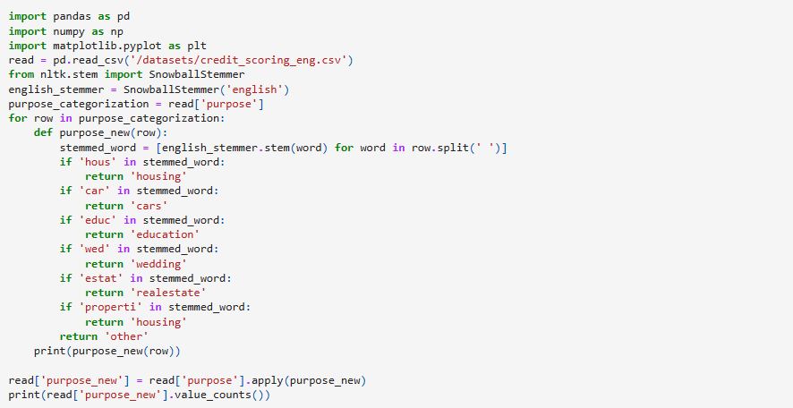

Report for Bank's Loan Division
This project is to prepare a report for a bank's loan division. This is to find out if a customer's marital status and number of children have an impact on whether they will default on a loan. A credit score is used to evaluate the ability of a potential borrower to repay their loan.A credit score is used to evaluate the ability of a potential borrower to repay their loan.
In this project I have worked on Preprocessing the data : Identify and fill in missing values Replace the datatypes as needed. Delete duplicate data Categorizing the data Analyzing if there is a connection between having kids and repaying a loan on time? Analyzing if there is a connection between marital status and repaying a loan on time? Analyzing if there is a connection between income level and repaying a loan on time? Analyzing how different loan purposes affect on-time loan repayment?